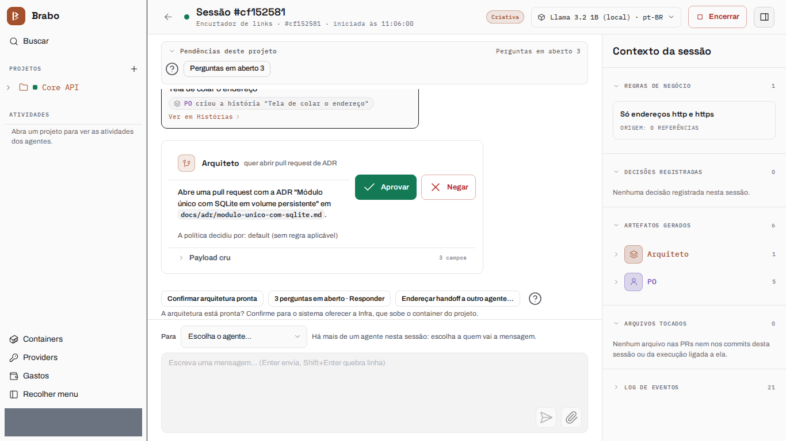
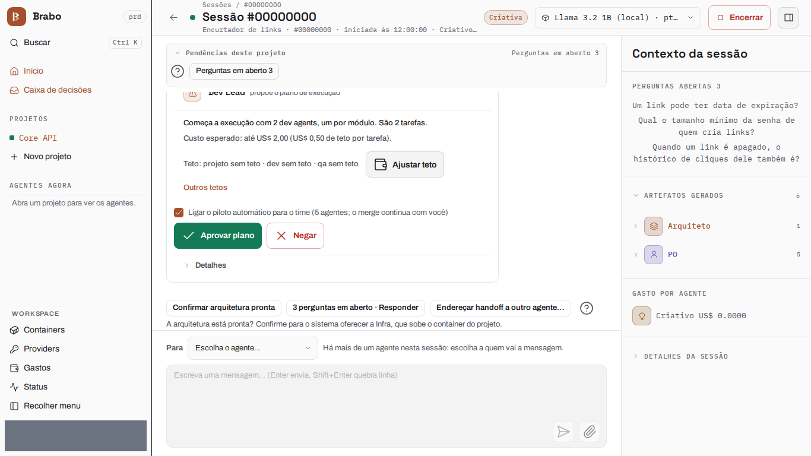

从零到交付物
本页端到端地跟随一个项目，从空工作区到可运行的交付物：一个短链接服务（Node 22 + SQLite），整个团队使用同一个模型。第 1 至 6 步的界面是当前界面的截图，由 brabo-qa 在每个版本生成，并隐藏了测试数据。
2026年10月14日 的记录：描述当时的 Brabo
作为示例的运行是现场录制的，下面的数字都来自它。项目 viralabs-app-2026-10-14b 运行在 Claude Haiku 5.5 上，花费 US$ 1.07。从想法到开始执行用了 13 分钟，到最后一次合并约 57 分钟的交互。产出 8 个任务中的 8 个，外加 ADR 和基础设施 pull request，以及一个在干净克隆中测试套件通过 102/102 的交付物。下面各步的界面来自当前界面，而不是这次录制。
一切都在 Criativo 的聊天里完成
整个运行都在一个地方——Criativo 的会话聊天中驱动：开放问题、架构确认和每一次合并都在那里决定，无需 刷新页面或打开其他标签页。
路径共六步：
- 创建项目，并选择代码存放的位置。
- 给团队一个模型，一次操作完成。
- 描述想法，并回答智能体的开放问题。
- 检查 PO、Arquiteto 和 ADR，并确认架构。
- 批准执行计划并开启自动模式。
- 在聊天中合并每一个通过闸门的 pull request。
下面每一步都说明你要做什么以及智能体交回什么。界面来自当前版本；10 月 14 日这次运行的数字见上方的框。
1. 创建项目
你在向导中创建项目，并选择代码存放的位置。这里是一个挂载文件夹：向导会在安装的项目根目录中建议一个路径， 而该文件夹只需在 Infra 启动容器时存在。此时还没有任何东西被供应——仓库要到之后 Arquiteto 被引入时才诞生。

2. 给团队一个模型
在设置中，你可以通过一个操作把一个模型应用到所有智能体。这次运行把 Claude Haiku 5.5 应用到了整个团队。

3. 想法，以及智能体反问的问题
你在 Criativo 的聊天中描述产品。在第一个回合中，Criativo 记录了 7 条业务规则和 1 项决定，并把它 无法独自决定的内容变成开放问题，每个问题都附有建议答案以及它影响的规则（"删除一个链接时，它的点击历史 也要删除吗？"）。这些问题位于聊天顶部的"开放问题"队列中：你接受建议或输入自己的答案，答案会被记录为一项决定。 回合的结束语会说明写入了什么（"本回合已记录：7 条业务规则、1 项决定、2 个开放问题"）。完成后， **"我准备好了——需求已验证"**会把工作交给 PO。

4. PO、Arquiteto 与 ADR
PO 把规则拆分成 backlog——4 个史诗、8 个用户故事和 8 个任务，用时约一分半——并且在某条规则缺少取值时
也会反问（"密码的最小长度是多少？"）。当每条规则都被用户故事覆盖后，交给 Arquiteto 的 handoff 会被自动
接受。Arquiteto 以 pull request 的形式提出 ADR（arquiteto[bot]，PR #1，"单模块，SQLite 位于持久卷上"），
并在架构定义后请你确认：**"确认架构就绪"**会把 Infra 引入。

5. Infra、计划与自动模式
Infra Lead 自行启动项目的容器，并打开基础设施 pull request（infra[bot]，PR #2）。Dev Lead 读取
backlog 和模块图并提出执行计划；批准计划就会激活执行。界面一键为整个团队提供自动模式，并说明它不放行
什么：合并到受保护分支仍由你决定。从那时起，dev agent 在容器内（/work）工作，你可以在聊天中查看它运行的
每条命令及其输出。

6. 从聊天中合并
每个任务都在 dev agent 中运行（从认领任务到 pull request 平均 90 秒，介于 36 秒和 144 秒之间），并经过流水线 Dev → QA → SecOps → 你。通过 gate 的 pull request 会进入 Criativo 聊天顶部的**"可合并的 PR"**队列： Merge 提出合并，同一区块中的 Approve 确认合并。在这次运行中，最后七个 pull request（#4 到 #10）在 约两分钟内合并完毕，无需刷新页面。

交付物
2026年10月14日 的记录：描述当时的 Brabo
10 月 14 日录制的那次运行是这样结束的。
项目仓库的 dev 分支，干净克隆后在 node:22 中运行 npm test，通过了 102/102 个测试。
docker compose up 在 8080 端口启动了 API，每条规则都通过 HTTP 进行了检查：错误的登录和不带 token 的请求
得到 401；ftp URL 或超过 2048 个字符的 URL 得到 400 INVALID_URL；短码有 7 个字符；公共重定向是记录点击
的 302；未知短码得到 404 LINK_NOT_FOUND，过期链接得到 410 LINK_EXPIRED 且不计入点击；删除链接返回 204
并移除其点击记录；面板显示点击数和点击历史；npm run user:create 拒绝短于 12 个字符的密码；/docs 提供 API
参考。来自 127.0.0.1:8080 和 localhost:8080 的 CORS 预检各自得到自己的 Access-Control-Allow-Origin，
而外部来源一个也得不到。
下一步
- 在多个仓库中编排一个产品 像拆分 Brabo 那样拆分产品的路径。